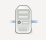

|
Before you can start an inventory of data, it should inquire into the Anjety or databases to query. To do this, click  to open the administration panel databases:

Now click this button  to open the edit window databases:
to open the edit window databases:

Fill in the fields as required:
- Name : Name that will identify the database
- Adress : IP address or DNS name of the device hosting the database
- Instance : Name of the instance of Oracle database that will be used to connect
- User : User name that will be used to connect to the database
- Password : Password that will be used to connect to the database
Now click on "OK" to complete the declaration of the database, on "Tester" to test the database connexion or on "Cancel" to exit the wizard without saving the database.